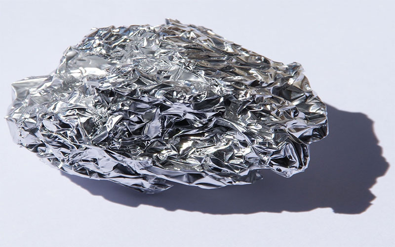
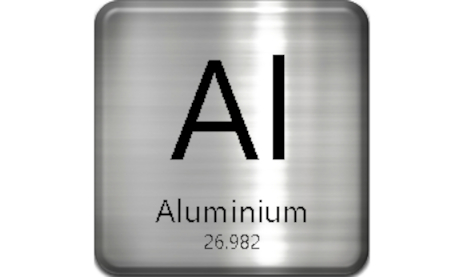

Алюминий
Алюми́ний (химический символ — Al, от лат. Aluminium) — химический элемент 13-й группы (по устаревшей классификации — главной подгруппы третьей группы, IIIA) третьего периода периодической таблицы химических элементов Д. И. Менделеева, с атомным номером 13.Простое вещество алюминий — это лёгкий парамагнитный металл серебристо-белого цвета, легко поддающийся формовке, литью, механической обработке. Алюминий обладает высокой тепло- и электропроводностью, стойкостью к коррозии за счёт быстрого образования прочных оксидных плёнок, защищающих поверхность от дальнейшего взаимодействия.

Название «алюминий» происходит от лат. alumen – так за 500 лет до н. э. назывались алюминиевые квасцы, используемые как протрава при крашении тканей и для дубления кожи. Впервые алюминий получен Х. К. Эрстедом в 1825 г. действием амальгамы калия на хлорид алюминия с последующей отгонкой ртути. Первый промышленный способ производства алюминия – восстановлением Na3AlCl6 металлическим натрием – предложил в 1854 г. А. Э. Сент-Клер Девиль. Современный электролитический способ получения алюминия разработан в 1886 г. одновременно и независимо друг от друга Ч. Холлом в США и П. Эру во Франции.
Алюминий – самый распространённый металл и четвёртый по распространённости (после кислорода, водорода и кремния) из всех химических элементов. Содержание в земной коре 8,8 % по массе. Вследствие высокой химической активности в свободном виде не встречается. Известно несколько сотен минералов алюминия, преимущественно алюмосиликатов (нефелин, каолинит и др.). Наиболее богатые алюминием породы (бокситы и др.) являются алюминиевыми рудами.
Из-за наличия оксидной пленки алюминий при обычных условиях не реагирует с водой и сероводородом. Алюминий, очищенный от оксидной пленки, начинает активно реагировать с водой и неметаллами. Алюминий проявляет достаточно сильные восстановительные свойства.

Алюминий используют главным образом для получения сплавов. По объёму применения алюминий и его сплавы занимают 2-е место среди металлов после стали. Алюминий – одна из самых распространённых легирующих добавок в сплавах на основе меди, магния, титана, цинка, никеля, железа. Чистый алюминий используют: в электротехнике (кабели и другие токопроводящие изделия); электронике (в том числе для изготовления полупроводниковых приборов); для изготовления зеркал-отражателей, специальной химической аппаратуры и резервуаров для хранения и транспортировки жидких газов (метан, кислород, водород и пр.), азотной и уксусной кислот, чистой воды, пищевых масел; как конструкционный материал ядерных реакторов.